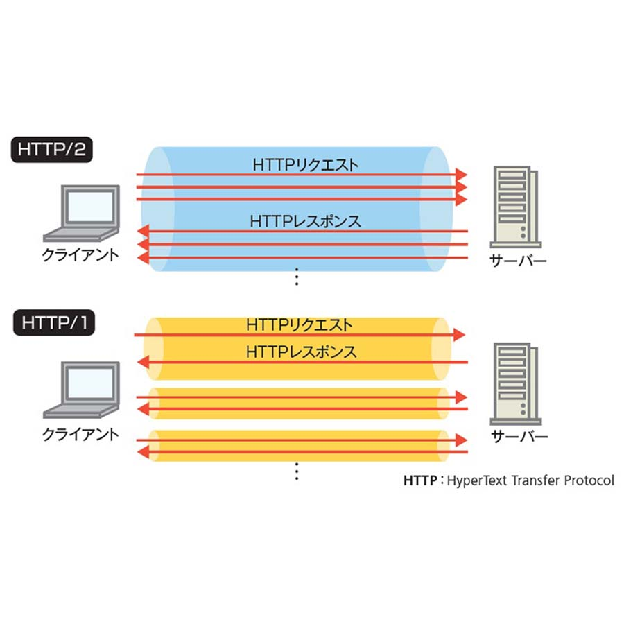

TKStudioで用いるWEB3D技術について。
数年前まで、web上で3DCGを用いたサイトを公開する上で、ページを表示するまでの時間が
とても長くかかり、使いたくても使えない。そんな大きなデメリットを持つ技術でした。
近現代、２年ほど前からhttp2というサーバー内での新しい通信企画により、スマホでも難なく
３Dを用いたサイトが読み込めるようになったのです。
Webの世界を詳しく
この記事では、WEB上で3DCGを構築する上で避けては通れない通信速度問題の解決について、 http2通信を交えて解説します。
おこがましいかもしれませんが、Webについてさらっと、解説します！
WebサイトをGoogleなどのweb上にアップロードするには、ほとんどの場合サーバーを他会社からレンタルし、 WEB上の住所となるURLに紐付け、常時動作させる必要があります。
普段使いのパソコンをサーバーとして稼働させることは、 コスト的にも、労力的にもとっても不都合である場合がほとんどだからです。
国内のレンタルサーバー最大手と言われている会社に、"XServer"があります。
私のこのブログや、TKStudioサイトも,XServerでレンタルしたサーバーで動かしています。
いまだかつて、サーバーがダウンしたことがなく、安定していつでも高速にWebサイトを表示できる点で信頼しています。
さて、２年ほど前から普及したhttp2通信ですが、従来のhttp1通信に比べ、圧倒的な通信速度の差を生み出しています。
通常のWebサイト、(HtmlやCSSのみで構成したサイト)の場合、通信速度に大差はありません。
しかし、
私の作成しているようなパソコンのGPU(グラフィックチップ)をダイレクトに温めるサイトの場合、 サーバーに皆さんのPC、スマホからリクエストするデータの量がどうしても増えてしまいます。
ところが、http2通信を用いると、http1通信の場合、ブラウザでの読み込みに、9~11秒かかる私のホームページが、http2通信で2~4秒で表示されます。
http2通信は、一言で説明するなれば、（スーパーマルチタスクサーバー）です。

例えば、画像を３枚ダウンロードするとします。http1では、1枚ロードが完了してから、２枚目に取り掛かりますが、 http2は、３枚同時にダウンロードします。通信速度はもちろん、通信プロトコルとしての内部アルゴリズムがめちゃくちゃ最適化されました。！！
皆さんも経験したことがあるのではないでしょうか。。
特に大手企業の関連欄がたくさんあるサイトにアクセスし、10~20秒待たされたような経験。
いつまで待たされるかわからない分、Youtubeの広告の方がマシに思えてきます(笑)
そういった問題を解決してくれる次世代の通信規格http2です。
本題に戻りますが、国内最大手と紹介させていただいたXServerですが、HTTP2通信が始まったのは 実は2021年の10月頃です。
この記事を書いているのが2022年の1月なので約3ヶ月前に始まったことになります。
TKStudioを開始
http2通信が囁かれ出して、私がWebでの3Dグラフィックを作成することに決めたのは、今から４年前の高校３年生の冬でした。
パソコンにローカル環境を構築して３Dグラフィックスの技術を学び始め、最初の頃は、プログラムを書いてから、表示されるまで本当に 時間がかかりました。最近になってようやく普及してきた"http2通信"。
レンタルサーバー会社もhttp2を提げる所がどんどん増えてきました。
WEB上でのネットワークが高速化したことで、WEB上でできることも比例してどんどん増えてきました。
TKStudioでは、新しい技術を取り入れ、これからも最高のグラフィックスを提供していきます！ 次の記事を読む